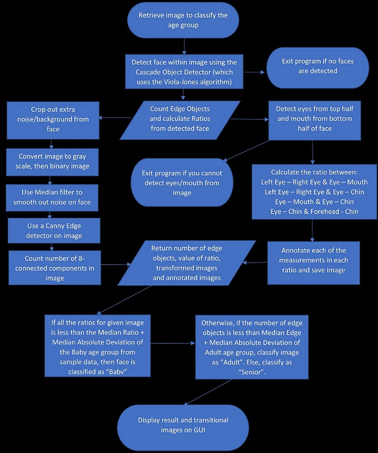

Process
 The calculation of face ratio comes from Age Classification from Facial Images
Ratio:


Edge:


The purpose of this application is to detect human faces and give a speculation of the person's age,
and the reason that we decided to choose human age classification topic is due to the unprevelance of the topic on the internet.
As much as we wanted to give the exact age number, we decided to take a step back from it due to the amount of time that was given to us.
There are several limitations that appear in this method, however.
The face in the picture must be a frontal face. If the face is angled (say, tilted or looking sideways) the Face detector is not trained to detect the image, so this methodology won't work.
Furtheremore certain aspects of the face could affect the result. If a person is wearing glasses in the image, it can prevent the eye detector from finding the eyes, and thus we cannot classify the face to any age group. One common example is a beard or hair on the face, which increases the number of edges and often the program classifies the image as a senior (even though the face could be an adult). See the image below as an example.
We have also noticed that the hair color/skin color also changes the result. If the skin color of the person is either very light or dark, the program often misses the wrinkles or outline on a person's face, which decreases the edge count, and can classify the person as younger than their real age group. One possible solution is to alter the value of the threshold when converting the image from RGB to binary depending on the brightness of the person's skin color.
Finally, if the image resolution of the original image is too big, this increases the amount of edge count, and the program tends to classify the image as senior. This is because a large image resolution would display the individuals skin in more detail (including blemishes), thus there are more objects counted during the edge detection. Some solutions we can do is to resize the image to a lower resolution if we determine it's too high, or change the threshold for edge detection depending on the size of the image.


Griff Zhang------------------------Meggie Cook
griffcho16@gmail.com----------mcook24@wisc.edu
University of Wisconsin Madison
REFERENCES:
1. Age Classification from Facial Images
2. Estimating The Age Of Human Face In Image Processing Using Matlab